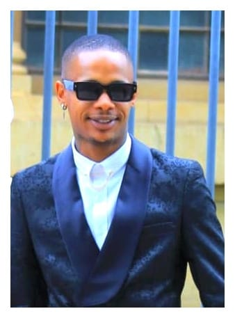

OkuhleKonke Foundation is a non-profit organisation dedicated to uplifting under-resourced youth by providing access to education, sport, and personal development opportunities.
We believe that every young person deserves a fair chance to succeed, regardless of their background or circumstances.
Founded by Siyanda Felem with the passion for community development, OkuhleKonke Foundation was created to respond to the growing challenges faced by young people in our communities. What started as a small initiative has grown into a movement focused on creating real and lasting change.
Vision: A future where every child has the opportunity to learn, play, and succeed.
Mission: To empower youth through education, sport, and leadership development.
Our programs are designed to address key challenges faced by youth:
Through our initiatives, we aim to positively impact hundreds of young lives by improving access to opportunities and creating safe spaces for growth.
Our team is made up of passionate volunteers, mentors, and community leaders who are committed to making a difference.

You can be part of the change. Whether you donate, volunteer, or partner with us, your support helps us reach more young people and build stronger communities.